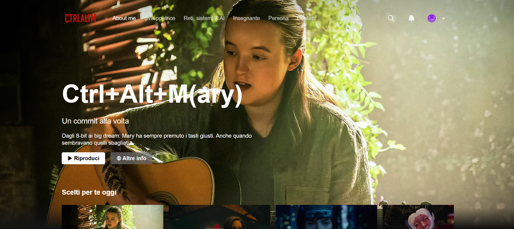
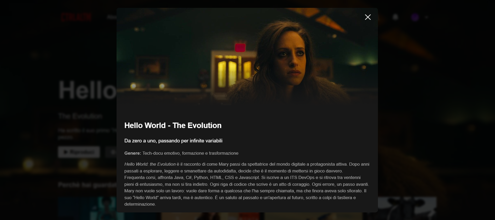
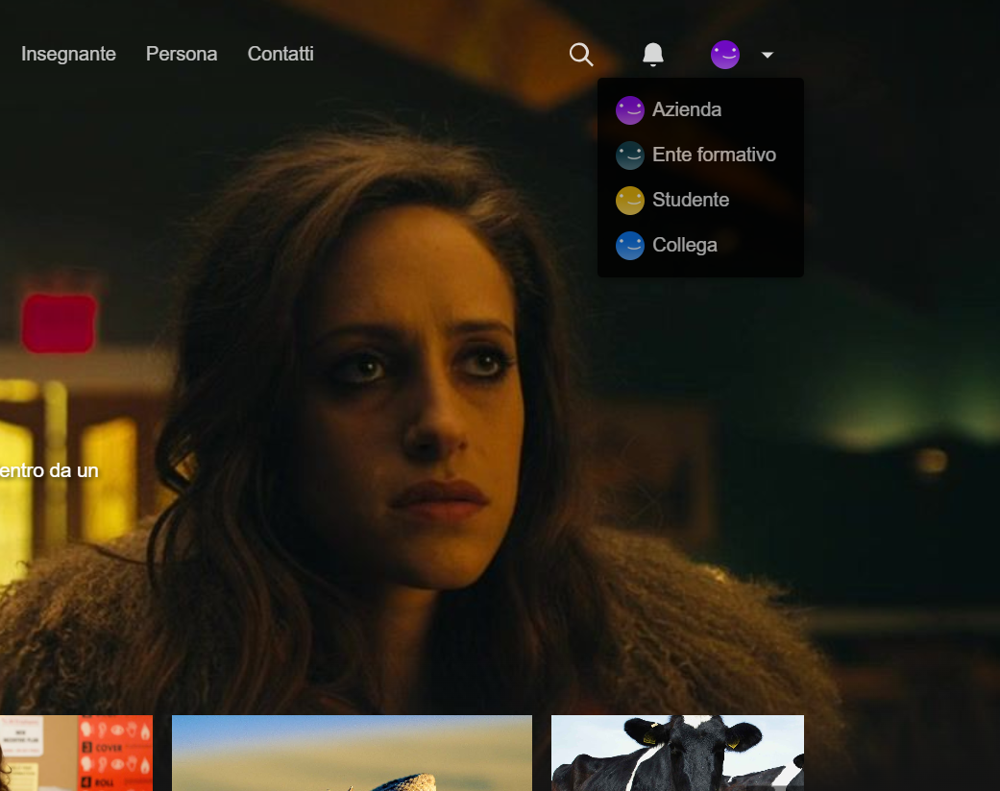
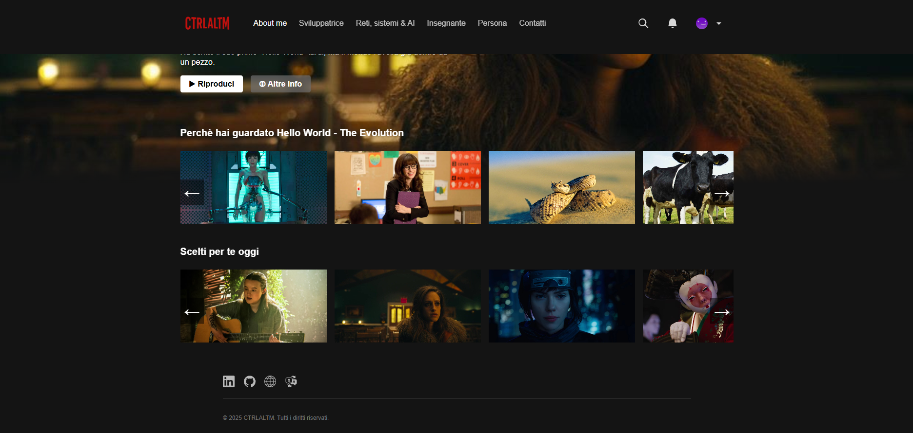

«Il portfolio di una sviluppatrice che si racconta, una card alla volta»
Genere: Portfolio creativo, Web personal branding
Linguaggi utilizzati: HTML, CSS, JavaScript
Link: mmilasi.github.io
Questo progetto nasce dall'idea di reinterpretare in chiave personale l'interfaccia di una celebre piattaforma di streaming, sfruttandone l'immediatezza e la familiarità
per offrire un'esperienza utente accogliente e intuitiva. La scelta non è solo estetica: è un gioco consapevole con le abitudini digitali degli utenti, che qui vengono
invitate a scoprire la persona come se sfogliassero un catalogo di storie.
Ogni sezione del sito è costruita come una “card” narrativa, non un semplice elenco di esperienze lavorative o competenze tecniche. Ho voluto superare la logica tradizionale
del portfolio, spesso fredda e impersonale, per abbracciare un racconto autentico: quello della persona dietro al codice.
L'idea centrale è che la vita professionale - come quella personale - è fatta di storie, di transizioni, di scelte, di errori e di svolte.
Il portfolio diventa quindi un dispositivo narrativo in cui design e contenuti collaborano per restituire un'immagine complessa, umana, viva. È un invito a conoscere la persona dietro la professionista
attraverso un'interfaccia che, pur essendo tecnica, mette al centro l'identità, le emozioni e il percorso che l'hanno portata fin qui.
Dal punto di vista tecnico, ho scelto volutamente di realizzare il sito in HTML, CSS e JavaScript, linguaggi con cui ho iniziato a familiarizzare da
autodidatta durante l'adolescenza. Tornare a scrivere codice con questi strumenti ha rappresentato un ritorno alle origini: un esercizio di memoria,
ma anche un'occasione per consolidare quanto appreso anni fa e reinterpretarlo con maggiore consapevolezza. Questo portfolio è stato quindi anche un modo
per rimettere le mani in pasta, rispolverare nozioni dormienti e restituire forma visiva al mio percorso attraverso strumenti che mi sono familiari da sempre.



